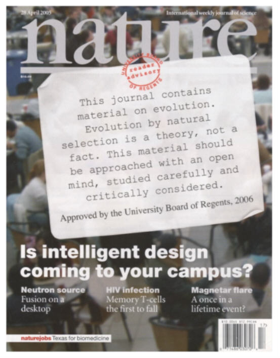

He merely suggests presenting ways one can reconcile Christianity with evolution.
He merely suggests presenting ways one can reconcile Christianity with evolution.| Feature Article - May 2005 |
| by Do-While Jones |
There is an uneasy feeling on Hysteria Lane, as evolutionists realize that they are losing their stranglehold on schools, textbooks, and Imax theaters.
|
The April 28, 2005, cover of Nature contained this tongue-in-cheek warning sticker. It is a reaction to the stickers placed in biology textbooks by some school districts, which evolutionists find so threatening. This particular issue of Nature contained an article and an editorial about the danger of allowing Intelligent Design onto college campuses. The cover story 1 wasn't too bad. It primarily documented the increase in interest in Intelligent Design by college students, but degenerated into speculation about religious motivation near the end. |
 |
The more revealing article was the editorial, which revealed the evolutionists' fear, paranoia, and misunderstanding. It contained statements like this one:
|
This is bad news for researchers. Unlike 'creation science', which uses the Bible as its guide, intelligent design tries to use scientific methods to find evidence of God in nature. This approach makes it less theologically heavy-handed than its predecessor, but it also poses a threat to the very core of scientific reason. 2 |
Any alternative to evolution is "a threat to the very core of scientific reason." How can critical examination of a theory be a threat to reason? Scientific evaluation is only a threat to superstition, which is what the theory of evolution really is.
To the editor, competing ideas are threats which must be met with some strategy.
|
So what can scientists do to counter the appeal of intelligent design? The concept's advocates frequently approach researchers with offers of campus-wide 'Darwin versus design' debates. Such events tend to be well attended, but don't change many minds. Furthermore, ill-prepared scientific lectures can sometimes lack the superficial impact of design advocates' carefully crafted talking points. 3 |
Intelligent Designers want to debate the issues. The editor advises against participating in debates for two bogus reasons.
First, he claims, they don't change many minds. When he says debates don't change minds, what he really means is that debates don't convince people of the truth of evolution. The fact is that debates do change minds.
If debates don't change minds, why fear them? He is afraid because people who have not previously given much thought to evolution generally reject evolution after attending such debates. He wants to hold onto those people who believe in evolution simply because they have always heard that "all scientists accept evolution." Ignorance is the most powerful weapon in the evolutionists' arsenal.
Second, he claims, the reason why the evolutionists lose is because their "ill-prepared scientific lectures" are not as compelling as the slick arguments their opponents use. Isn't it remarkable that biology professors can't present a well-prepared scientific lecture? If they can't, what business do they have teaching biology?
The simple truth is that evolutionists lose these debates because the scientific evidence is against the theory of evolution. It isn't because the creationists or intelligent designers are just slick debaters. The editor is out of touch with reality. He says,
|
Scientists know that natural selection can explain the awe-inspiring complexities of organisms, and should be prepared to explain how. But attacking or dismissing intelligent design is likely to aggravate the rift between science and faith that causes students to become interested in intelligent design in the first place. 4 |
Natural selection can't explain the awe-inspiring complexities of organisms, which is why evolutionists aren't prepared to explain how.
There is no rift between science and faith. Isaac Newton didn't have any trouble reconciling science with faith because there wasn't anything to reconcile.
The problem is that evolutionists confuse evolution with science. There certainly is a rift between evolution and Christianity because there is a rift between evolution and science.
Students don't become interested in intelligent design because there is a rift between science and faith. They become interested in intelligent design because the theory of evolution is insufficient to explain the origin and diversity of life on Earth, and because they (for one reason or another) don't accept the Biblical explanation. Intelligent design offers a non-Biblical alternative for non-Christians who recognize the intellectual bankruptcy of the theory evolution.
|
Scientists would do better to offer some constructive thoughts of their own. For religious scientists, this may involve taking the time to talk to students about how they personally reconcile their beliefs with their research. Secular researchers should talk to others in order to understand how faiths have come to terms with science. All scientists whose classes are faced with such concerns should familiarize themselves with some basic arguments as to why evolution, cosmology and geology are not competing with religion. When they walk into the lecture hall, they should be prepared to talk about what science can and cannot do, and how it fits in with different religious beliefs. 5 |
We were encouraged by the first sentence of that paragraph. If the theory of evolution is a credible theory, evolutionists ought to be able to present some constructive thoughts about it. Why haven't evolutionists thought of this before? The obvious answer is that there isn't a reasonable scientific defense of the theory of evolution. Look at what happened when National Geographic published "Was Darwin Wrong", and Scientific American tried to present "Fifteen Answers to Creationist Nonsense." When they try to address scientific issues the weakness of the theory becomes more and more obvious.
Notice that instead of proposing a reasonable defense of evolution, the editor suggests another approach. What he suggests doing has a name in Christian circles. It is called "witnessing" or "sharing your faith." He merely suggests presenting ways one can reconcile Christianity with evolution.
Reconciling Christianity with evolution is not the answer. Evolutionists need to reconcile science with evolution. How can they reconcile the idea of the natural origin of life with chemistry and thermodynamics? How can they reconcile the idea of the natural origin of various distinct types of organisms with biology and information science?
The fictitious warning label on the Nature cover says,
|
This journal contains material on evolution. Evolution by natural selection is a theory, not a fact. This material should be approached with an open mind, studied carefully, and critically considered. |
What's the alternative? Should we approach any material with a closed mind, study it carelessly, and accept it uncritically?
Warning labels like this would also be appropriate for textbooks used for political science, economics, social studies, psychology, and literature. The reason there aren't warning labels for these subjects is that they aren't needed. Teachers encourage students to consider all these other subjects critically. The theory of evolution is the only academic subject that some people want accepted without question. Furthermore, there is an increasing effort to censor the science curriculum to remove any criticism of evolution because the evidence against the theory of evolution is mounting daily.
|
The hearings in Topeka center on two proposals. The first recommends that students continue to be taught the theory of evolution because it is key to understanding biology. The other proposes that Kansas alter the definition of science, not limiting it to theories based on natural explanations. 6 |
The theory of evolution is not the key to understanding biology. Fanciful speculation about how things came to be is irrelevant to biology. Certainly there is value in comparative anatomy, but observing similarities and differences need not be complicated by trying to figure out how one feature evolved into another. That speculation is unproductive.
We support the good, old-fashioned definition of science that said science is the process of obtaining knowledge by the scientific method. That old-fashioned definition was altered a few decades ago by evolutionists specifically to rule out the possibility of creation.
There is a certain irony here. Remember that the editor of Nature suggested that evolutionists should minimize the rift between faith and science. But evolutionists are fighting hard to keep a bad definition of science that is designed to create that rift.
There are some medical studies that have alleged that patients recover more quickly when doctors pray for their patients. We don't know whether these studies are valid or flawed. We neither support nor dispute the conclusion of these studies. Our only point is that these studies are "unscientific" by definition because they involve supernatural power. By the current definition, one can never determine "scientifically" whether or not prayer works, regardless of how conclusive any experiments might be, because the definition of "science" favored by evolutionists arbitrarily excludes the possibility that miraculous healings can take place.
|
"Public hearings and votes are not how the truth of science is determined," said Harry McDonald, president of Kansas Citizens for Science. 7 |
Although McDonald is a spokesman for the evolutionary side, we strongly agree with him. The problem is that the "truth" of the theory of evolution has for decades been determined by politicians and judges, not scientific evidence. McDonald wants to keep the status quo, rather than allowing science teachers to present all the evidence against the theory of evolution. He wants to keep the brainwashing machine well oiled by censoring the science curriculum.
|
Dozens of national and state science organizations are boycotting the hearings ... 8 |
If the scientific evidence were in favor of evolution, the smart thing for evolutionists to do would be to have these science organizations present a compelling case for the theory of evolution. But, since they really have no case, they are boycotting the hearings, refusing to engage in scientific dialog.
Religion and politics are certainly behind this controversy.
|
"Part of our overall goal is to remove the bias against religion that is in our schools," said William Harris, a chemist who was the first witness to speak yesterday on behalf of changing the state's curriculum. 9 |
There is no question that the bias against religion in public schools has sparked a backlash against some secular humanist doctrines being taught (acceptance of homosexuality, safe sex, abortion without parental notification, situational ethics, evolution, etc.) that are viewed as anti-Christian. Since the theory of evolution is the soft underbelly of secular humanism, it is the obvious place to make a beachhead. The scientific evidence against the theory of evolution is strong, so a victory over evolution can pave the way for other changes to the curriculum.
Unfortunately, the political and religious ramifications clutter up the scientific issues. We've seen lots of television news coverage about the Topeka debate, and we suspect you've seen it, too. But in all that coverage, we haven't heard a single word about the scientific merits (or lack thereof) of the theory of evolution. The argument is always about how religion should be presented in public schools, how much government should be involved, etc.
Certainly these are important issues, but religion and politics are issues upon which we take no stand.
Evolutionists are wise to keep the religious and political elements in the forefront because those are arguments they have a good chance of winning. If they let the discussion center on science, they are doomed.
This battle isn't just being fought in the schools; it is also being fought at Imax theaters. A letter was sent Monday, 28 March 2005, to 410 members of the Association of Science-Technology Centers. The letter was prompted by recent reports that Imax theaters in at least a dozen cities have declined to show films that accept the science of evolution.
|
A March 19, 2005 New York Times article--"A New Test for Imax: The Bible vs. the Volcano," by Cornelia Dean--raised serious issues about the future of science and scientific freedom in America. The article, which detailed the growing trend of science museums declining to show Imax films that mention the process of evolution, explains that fear of protests has prompted some museum managers to scrub such offerings from play lists. The films include "Galapagos," about the islands where Darwin theorized about evolution; and "Volcanoes of the Deep Sea," a look at life in the super-heated world of deep-sea vents. 10 |
We haven't seen either of these two films, but we have seen other Imax productions and realize the problem with Imax films is not with the science, but with the religion they insist on mixing with the science. "Volcanoes of the Deep Sea" undoubtedly contains excellent underwater photography, and accurate information about the strange forms of life living around underwater volcanoes. But Imax producers never seem to be satisfied to present a science lesson in an entertaining and effective format. They always seem compelled to insert some secular humanist doctrine into it.
No doubt a Christian film company could take the images, music, and 99% of the narration of "Volcanoes of the Deep Sea" and change 1% of the narration to make it a Christian film. All they would have to do is replace faith-based statements about how life evolved in this harsh environment with faith-based statements that God created extreme forms of life with the ability to live in such places.
Any speculation about how the life around submarine volcanoes came into existence has no place in a science movie. Describe the life. Explain how it is different from life in other environments. Tell how its metabolism works, and how it reproduces. But don't guess about how it got that way.
Unfortunately, the people who spend the big bucks to make impressive nature movies always seem compelled to push either their Christian or evolutionary beliefs. What makes Christians angry is that the Imax films are often shown in national parks, and there is the assumption (which may or may not be correct) that taxpayer money was spent to produce a movie which mixes secular humanism doctrines with real science in an attempt to give the theory of evolution credibility and undermine Christian values.
Imagine the outcry there would be if secular museums or public school science classrooms showed movies like, "Incredible Creatures That Defy Evolution." There is a lot of good science in Christian nature films, but they speculate on origins, too. Pure biology films are hard to find. Nearly all are polluted with speculation about origins.
As a result, there is a big political battle about what can be taught in public schools, or shown at Imax theaters.
Scientific "truth" should not be legislated or determined by popular opinion. That is why Science Against Evolution does not get involved in politics. We don't try to mandate what can and cannot be taught in public schools. We don't endorse candidates for school boards. We don't endorse or protest proposed public school science textbooks. We don't try to force an agenda on anyone.
We simply try to provide balance. We provide the information that evolutionists would like to censor. We give you information so that you can make up your own mind.
| Quick links to | |||
|---|---|---|---|
| Science Against Evolution Home Page |
Back issues of Disclosure (our newsletter) |
Web Site of the Month |
Topical Index |
Footnotes:
1
Brumfiel, Nature, Vol. 434, 28 April 2005, "Who has designs on your students' minds?", pages 1062-1065 (Ev)
(Ev+)
2
Nature, Vol. 434, 28 April 2005, "Dealing with Design", page 1053 (Ev)
(Ev+)
3
ibid.
4
ibid.
5
ibid.
6
Los Angeles Times and The Washington Post "Science, religion collide in Kansas debate" http://seattletimes.nwsource.com/html/nationworld/2002265204_evolution06.html
(Ev)
7
ibid.
8
ibid.
9
ibid.
10
28 March 2005 Letter from AAAS CEO Alan I. Leshner: "Strong Concerns" On Science Film Suppression
(Ev+)